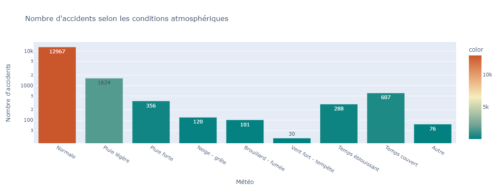
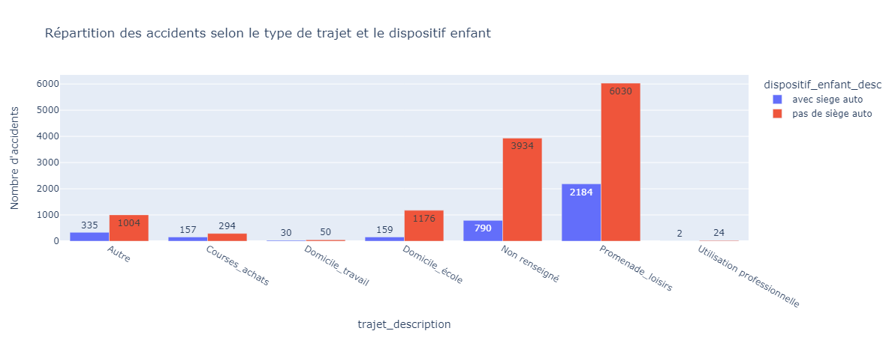
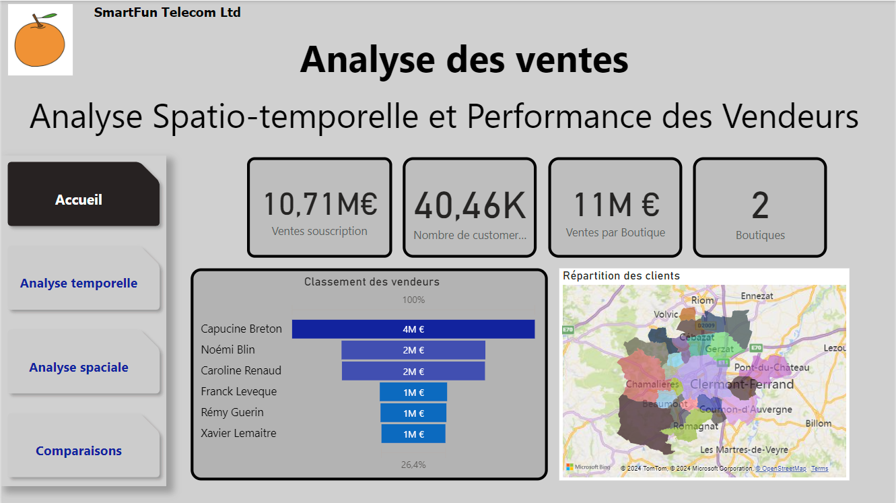
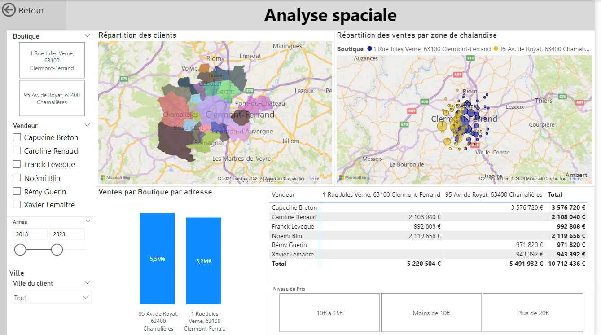
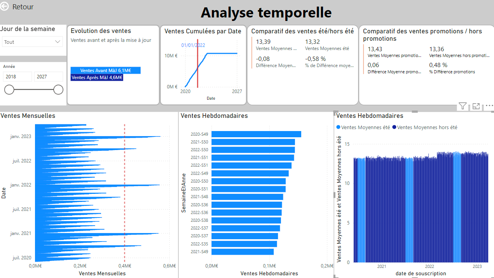
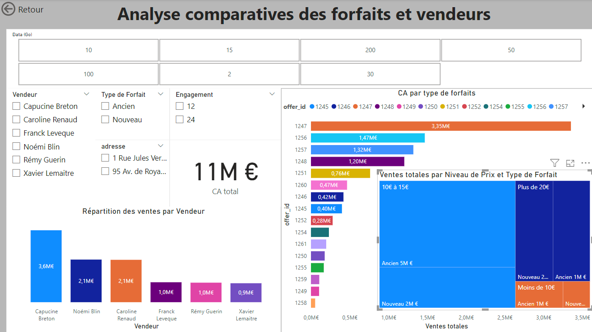
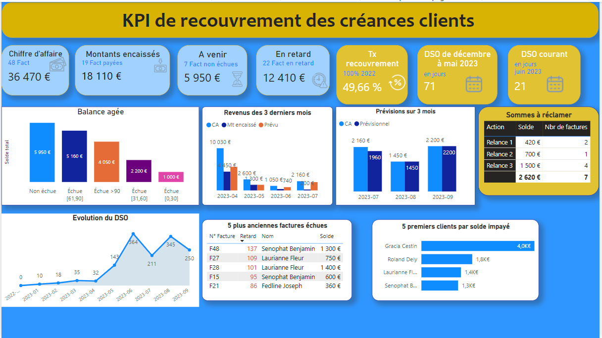
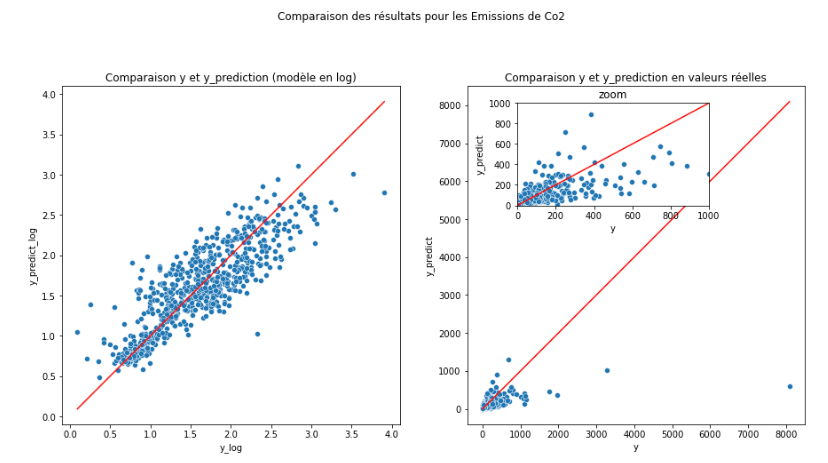
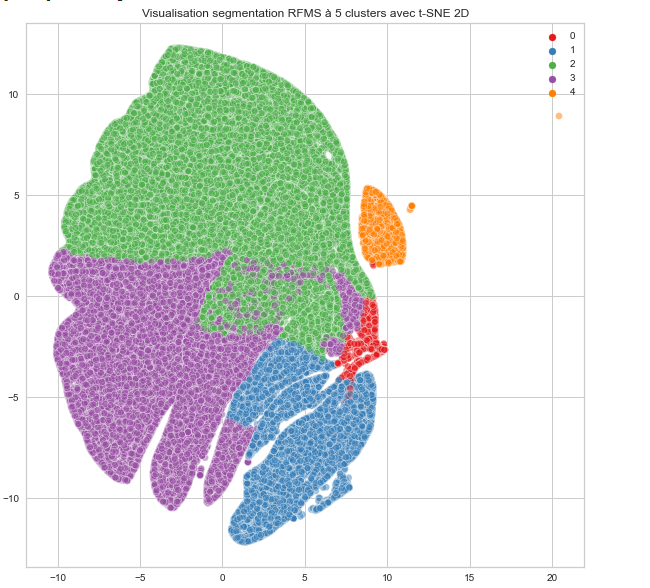
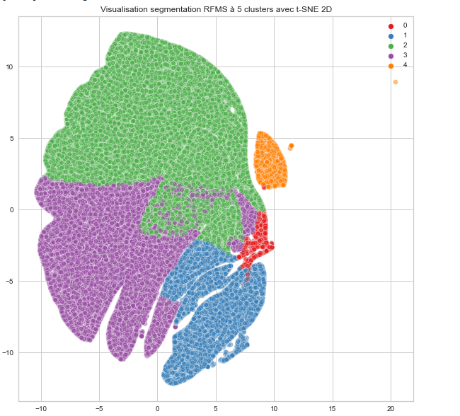

Ce que je peux vous apporter
✅ **Détection d'Insights**
✅ **Aide à la décision**
✅ **Analyse de tendances**
✅ **Résolution de problèmes**
✅ **Esprit critique**
✅ **Amélioration continue**
Compétences Techniques
| Data Engineering | Data Analysis | Data Computing & Bases de Données |
|---|---|---|
| Python, SQL, AWS, Hadoop, Pyspark, Docker, Git | Kibana, Power BI, Excel, Pandas, NumPy, Matplotlib, Seaborn | Scikit-learn, TensorFlow, MySQL, PostgreSQL |
Analyse des accidents routiers en France des mineurs de -10 ans
Ce projet a pour but de sensibiliser aux dangers de la route pour les plus jeunes. J'ai réalisé une analyse exploratoire avant de prédire la gravité des accidents en fonction de plusieurs facteurs.
  Voir le projet
Voir le projet
Dashboard d'analyse des ventes de forfaits téléphoniques
Ce projet explore les données de ventes de SmartFun Telecom Ltd, notamment les forfaits téléphoniques, fournissant des insights grâce à des visualisations et analyses statistiques. Visualisation de données avec Power BI, analyse de ventes de forfaits téléphoniques, analyse temporelle, création d’user-story afin de définir les KPI, modélisation des données fournis.
    Voir le projetDashboard d'analyse de recouvrement de créances
Ce projet analyse les données de recouvrement de créances, fournissant des KPI clés à travers des visualisations et analyses statistiques. Visualisation de données avec Power BI, création d’un dashbord contenant les insights corrects avec l’analyse de créances , le calcul du DSO(Délai de paiement des Créances moyen ), créance cumulée et taux de recouvrement.
 Voir le projetMachine Learning Supervisé
J'ai construit un modèle de régression pour prédire la consommation énergétique de bâtiments, évalué avec des métriques comme RMSE, R² et MAE. Différents algorithmes ont été testés : SVR, RandomForest, Elastic Net, LGBM.
 Voir le projetMachine Learning Non Supervisé
Projet de clustering de données clients e-commerce avec K-means, DBSCAN et PCA, pour segmenter les clients en groupes significatifs.
 
Voir le projet

Voir le projet